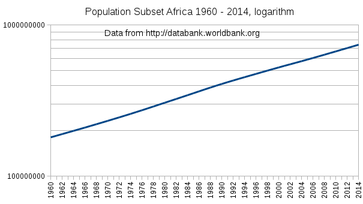
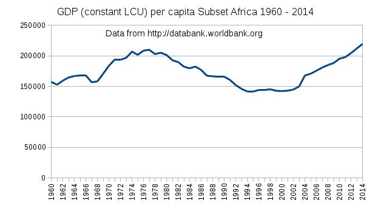

Translation : Emmanuel Azencot Author : Emmanuel Azencot Creation : Sun Jan 10 20:20:12 CET 2016 Update: Mon Dec 25 14:29:29 CET 2017 |
|
|
|
Encyclical letter Laudato si’ of the holy father Francis, "On care for our common home".
193. In any event, if in some cases sustainable development were to involve new forms of growth, then in other cases, given the insatiable and irresponsible growth produced over many decades, we need also to think of containing growth by setting some reasonable limits and even retracing our steps before it is too late. We know how unsustainable is the behaviour of those who constantly consume and destroy, while others are not yet able to live in a way worthy of their human dignity. That is why the time has come to accept decreased growth in some parts of the world, in order to provide resources for other places to experience healthy growth. Benedict XVI has said that “technologically advanced societies must be prepared to encourage more sober lifestyles, while reducing their energy consumption and improving its efficiency”.[135]
So be it
"Development" is very expensive: Extending it worldwide is suicide
Keeping some of us under Darwinian selection is to be considered
Pack to leave half of the planet with low human foot print
Low human interaction oppose to universal development policy
Development result in population blow that increase social pressure
This time, look for something to drop, not something to add. Money ?
North welcome south population until it stabilize at a little rate
Translation are welcome. Please send me your work without decoration and in medieval file format , .txt, .html, .rtf, word 95 would be nice. I will keep your contribution anonymous, with as much care I am able, if you which so.
My English is French, so you can also give correction for it.
If you have an idea ... think about it !
Deforestation in the Congo Rainforest
Collapse: How Societies Choose to Fail or Succeed
The prehistoric and preindustrial deforestation of Europe
Mutation galore
Historical Energy Production Statistics
The Far Future:2200-2249 timeline contents
It is the one coming from a place who use to be and is still overcrowded. The last 1700 years democratic reorganization followed by the industrial revolution has reached the European population raised from 100 million in 1700, to 700 million in 2000. During this period Europa have heavily contributed to deforestation, species extinction ozone hole and last but not least, global warming.
Not only the way of development is very costly but also is post-industrial model. if it was to be completed by third world it would enlarge our foot print that is already known to be unaffordable : "World Energy Consumption Since 1820 in Charts" shows that moving to renewable energy is not for tomorrow. "The Global Food Challenge Explained in 18 Graphics" requirement for 2050 population is not about to reduce our foot print.
Results from efforts toward lowering our impact on planet seems to be very small compared to the actual situation. Spreading it everywhere will make it worse.
Man is an endemic species of Africa and thus this place hold the most of functional human genome. Population potential in Africa is tremendously higher than everywhere else. In ancient times they have colonized the world several times. At the time of European colonies some African have been moved to replace local population wiped by diseases and bad treatments. In spite of really bad living condition, none of these population have disappeared.
On the other hand our medicine allow most people to survive but curing us has the statistical long term effect of lowering the genome quality. It is possible to fix that with test tube baby technologies that are available but leaving the faith of humanity in Dr Frankenstein hands is a bit early. Did you heard he created a new creature mixing salmon with cod ? May be he'd better try concentrate on human after all.
Modern way of live, while reducing mortality prevent natural selection to act on our genome. Hemophilia, retinoblastoma, are examples where prevalence is significantly higher in high incomes countries. This will slowly accumulate deleterious mutations in DNA populace lowering probability for a man to survive without medical assistance.
These worries about human genomic degeneration would not exist if at least a part of us stay out modernity and of medicine. But as we tend to extend both of them worldwide this will result in man endemic African spot to disappear. We may keep part of our best human genome within Darwinian selection process.
Are we sure to make our descendant live better, when everywhere will be overcrowded, there will be no lion, no rhinoceros, and even no sharks. Indeed, development make the world incredibly boring as it tend to make everything easier.
Specie extinction does not hit all species equally. While we randomly destroy most species, human parasites are positively selected. Mosquitoes, lice, flea, minces, rats, pigeons, crows are not about to disappear. Going on pressuring nature mechanically select the species that know how to use the new available resource man had became.
It's seems that economy as well as country based policy are both not on the right way. First we should recall that overcrowding is always a major cause of any trouble. Then solution leading to a population increase should be avoided, and so any change must be constrained to continuous smooth decrease. Second is that nature does not need our help, we are the concern.
Even a lot of people shares this concerns, we did not yet found many ideas that solve them. Emptying those places and the means to achieve it may look as an extreme ecological dream, but it's a dream and it's better than the nightmare we are preparing. It is actually possible if players interests converge.
From individual point of view there are two options : get in the matrix or live in the wild. This choice should be offered at any time to any body. It correspond to one of the oldest socialization pattern : in case of trouble with the community, go to forest. An other recurrent wish is to bring up child in "nature".
From global view, wasteland should be more than half of the Earth including oceans. Southern hemisphere is less populated and have less emerged lands, it is also less spoiled. On the contrary north have already many infrastructure and industrial settlement. Some of them require heavy end of live process : nuclear power plants, dams. Border of wasteland should correspond more or less to the tropic of Cancer.
When questioned about poverty and social inequity in the world we react with our way of doing things better. Here some example of help we provide.
As stated by this random chosen organization Partners Worldwide, "With four strategic directions as our compass, we chart a course toward a time of jubilee, when all humanity is reconciled with one another in partnership with God". "It is intended to change the way people view economic development, breaking the long-standing mold of one-way aid and charity".
This notion of one-way aid and charity is explained by Charitable giving by country: who is the most generous ? . The basic action is to secure food as stated by this average organization WFP's 'Food Assistance for Assets' "Programmes can produce immediate advantages for a community in terms of food security and nutrition".
Developing agriculture seems to be better than providing food according to this article "Third world needs agricultural development, not food aid say scientists", "A recurring theme was the need for developing countries to give greater emphasis to agriculture and food production in their national policies".
Unsurprisingly, Stanford university found that "Foreign aid for health care is directly linked to an increase in life expectancy and a decrease in child mortality in developing countries". For practice "Medical Bridges closes this health care gap by connecting those who have with those who hope".
The need for infrastructure is pointed by USAID when noticed that "In many developing countries, basic infrastructure - power, water, sanitation, information and communications technologies, and roads - is failing, insufficient, or non-existent". In this article from The Guardian "Tackling poor infrastructure is vital for developing countries", "Adam Smith International has produced a practical tool kit for donors to maximize value on infrastructure programmes".
There are also a lot of initiatives around education, debt relief, democratic transition, renewable energy and many more. This large offer should meet most third world needs.
UN Millennium Project: Goals, targets and indicators
Did it solve poverty concern, did it stabilize population, did it lowered injustice, did it improved people's lives ? Most of the times effort just introduced concerns that did not exists before. See "Around the world ‘development’ is robbing tribal people of their land, self-sufficiency and pride and leaving them with nothing".
On the contrary, in Africa, famines in 1900 to 1910 killed 42 000 persons while during 1990-2000 it was 470 000 (1), ten time more. In the meanwhile African population that was around 100 million in 1900, rose close to 1 billion in 2000 (Long term population dynamics in Africa: A perspective from the urban structure). Unsurprisingly troubles where also multiplied by a factor of ten.
"The hypothesis according to which, in forest zone, the change in population density leads a change of landscape structure was verified by means of a study area situated in the Oriental Province of the Democratic Republic of the Congo". Now human pressure is ten time higher.
In America, things began very sadly as described in "American Indian Holocaust and Survival", page 44 which gives the long list of diseases we provided them. As most American original population have disappeared they have been replaced with a mixed of with European, local, and black. (wikipedia: Ethnic groups in Latin America). Most of are now offered a great alternative there : favelas or rain forest.
In these two continents flora and fauna is replaced with an
agriculture that is not even sustainable. It is likely that all these
place will dry as explain by "large-scale agriculture expansion in Amazonia may introduce climate feedbacks that would reduce precipitation". Development process is changing Amazonian luxuriant tropical forest to a Saharian desert.
As a result of colonial, then economical exploitation with a drop of charity lead two major continents to have fast and constant population increase while staying near survival. This is the ideal situation for a massive immigration submersion with a cultural collapse.
If development process go on in those places they will soon be deserts while we likely will see uncontrollable flow of people toward north. Turning into deserts both Africa and Amazonia in turn will change climate. Indeed we cannot afford to lose African and South American continental rain forests and it is exactly what we do when promoting development there.
|
 |  | ||||
| 200 million to 600 million in 50 years in this subset | It's better than exponential | GDP per capita does not show the same vitality |
Countries in subset, in Africa with full population and GDP data (http://databank.worldbank.org):
Ghana |
Algeria |
Malawi |
Sudan |
Benin |
Togo |
(1) "Famines in the twentieth century", page 9, table 2. Stephen Devereux.
So far we tried to cure the third world using our successful experiences. We forgot that the tools we are using allow also population growth we have had step by step co-evolution. Using them everywhere obviously produce the same results everywhere, with a slight difference in population ability to understand their drawbacks.
One of this tool is money. It was invented to improve our lives as it make people have a better collaboration. One of the main is money which provides a reference when doing exchanges. It make everybody instantaneously crazy and is a cause of a large panel of mental disorders : gold fever, high debt, hoarding, pathological gambling, workaholism, overspending, financial denial, risk aversion etc.
As it is tremendously efficient its removal may be suitable with a return to natural equilibrium in those places. Unfortunately it cannot be withdraw without a lot of suffering and deaths. Money disappearance may just be an evidence of economy collapse.
As well as money, most organizational tools, like state, school, finance, medias cannot be removed for the same reasons, they will sharply drop the maximum population allowed without.
Stopping development program as new infrastructure or new technologies that will "help" these people certainly a good bet. Redirecting welfare to an other areas as we did many times already ? Children bashing and reforestation effort are to be considered prior than the others but this will not change the overall trajectory.
The magic quadrant at the intersection of organization and nature. The fun is to kill a lion with a riffle from a four wheel drive with clim. Just remove all this stuff, it'll be much more fun. Kill a lion should indeed be allowed, after a long travel on wooden sailing boot, several hundred km walk, help from locals, serious training session with assegai to have a chance to do it. No trophies no photos and an interminable way back. Volunteers ?
Be sure that whatever the difficulty and the level is, there will be some. There is absolutely nothing to organize for such a lion hunting to become that dangerous. It is just a lower level of organization in Africa.
(1) "Technofix: Why Technology Won’t Save Us or the Environment", Michael and Joyce Huesemann.
Bangladesh, India, Europa, in these places people found convenient to be more numerous. The tools we coined for that are amazing : Writing, Astronomy, Money, School, Math and so on. It is very generous from us to wish these ideas to be shared by every body to be happy, indeed. That's once again demonstrate that we have made the choice of helping each other.
On the other hand, our way cannot be extended worldwide, especially to those places that are top ranked in bio-diversity, just because we must keep margins. So the only thing we can do is to welcome people that want to share our choices and let those who prefer to stay there, out of the game. And the game should be closed as population moves.
At now this is 1.5 billion people to move, minus the little part who will stay. Waiting make this amount to increase until a likely uncontrollable flow of people from these places we are not prepared for.
To achieve transfer we need to setup a high throughput integration path to welcome immigrant from old and new world. The current path is adult immigration that is far from being fast enough to swallow enough people to empty significant surfaces. The effort to handle adult adaptation is heavy while they are bound with the most difficult situation offered by our organizations.
A most efficient way may be to move children. "Adopting a child especially from a third world country (like the poor countries in sub-Saharan Africa) and giving that child a good place to call a home, good education, and a better future, is one of the greatest gifts you can ever give". The drawback of the adoption way is the length of the process and only suit orphans situation.
A more general process may be godparent that take care of the child while maintaining parents links. Optimal age for such exchange should be around 8 to 12 years old. This way both party share an equitable part of children bring up work load.
Thanks to kat, nat and fanfan for hearing me and for lecture.